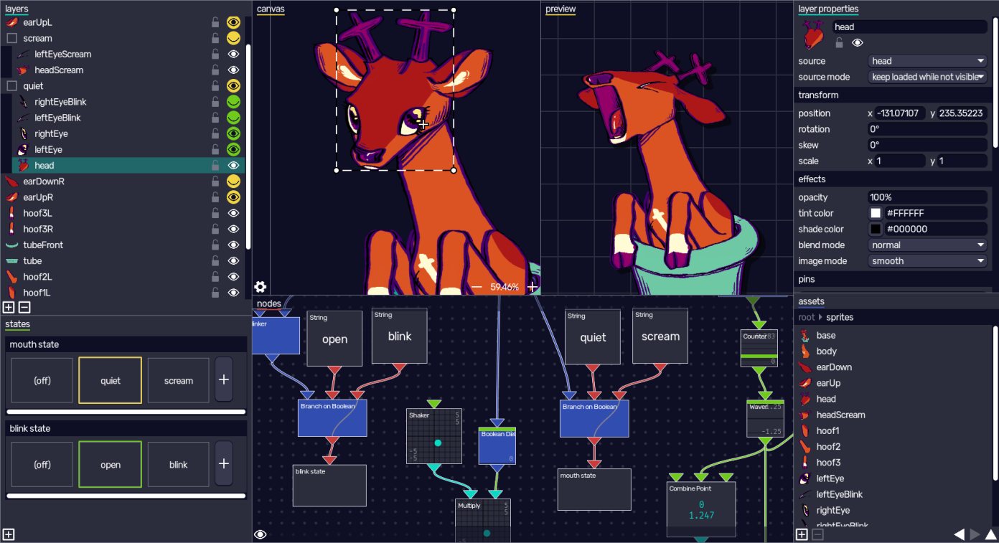
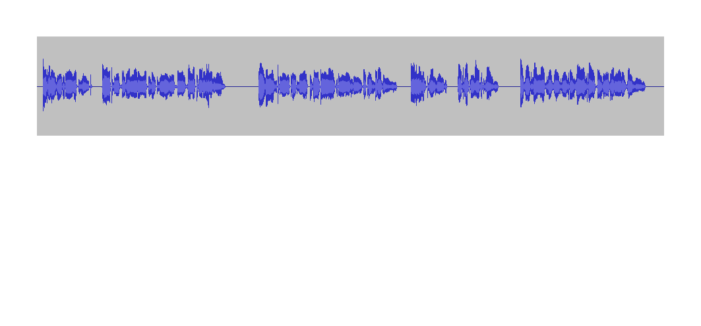
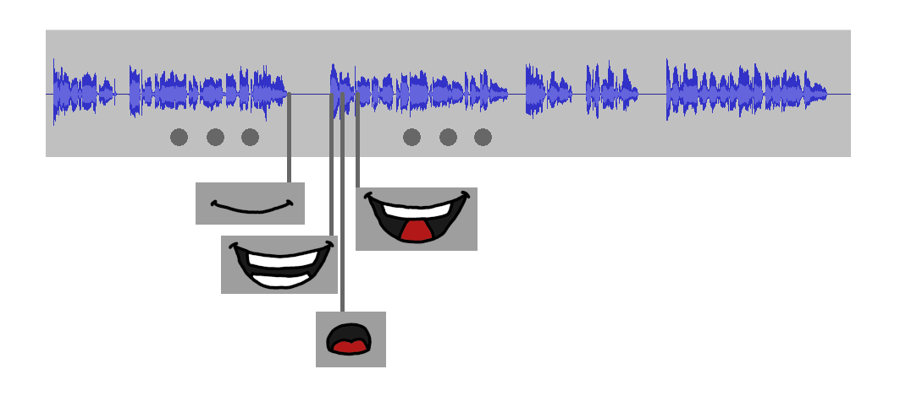
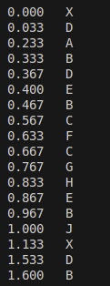
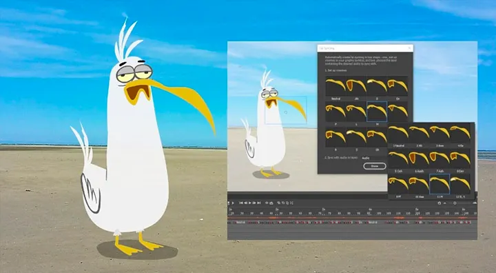
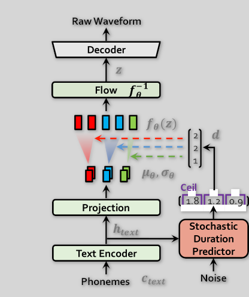
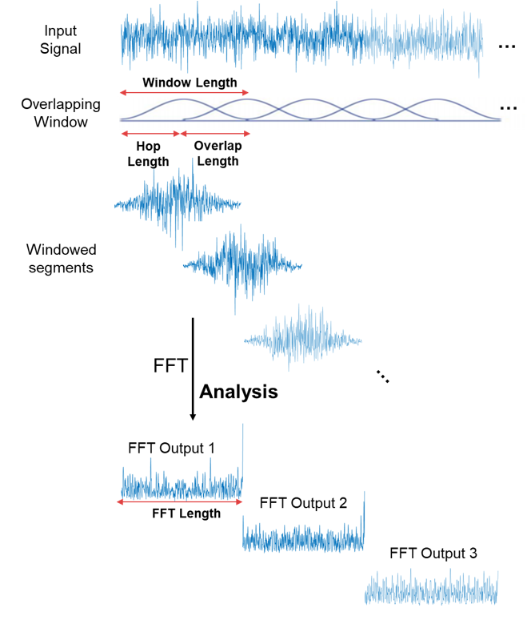
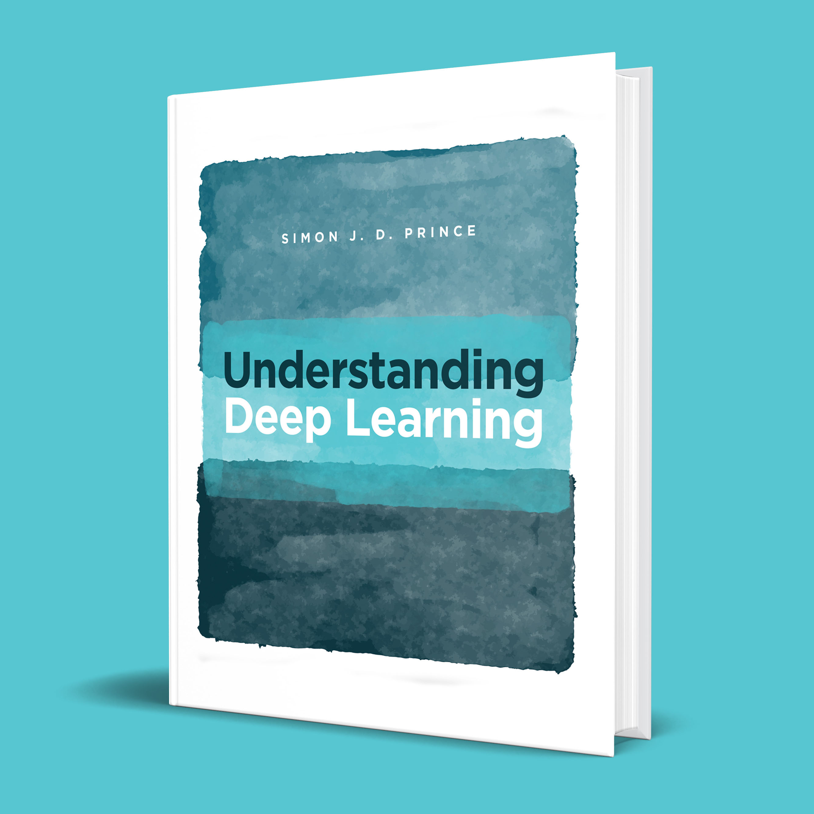
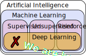

## üçí Cherry Lip Sync Nathan Whitehead --- <p class="leftalign"> <a href="https://github.com/nwhitehead/cherry-lip-sync"> <svg xmlns="http://www.w3.org/2000/svg" width="48" height="48" viewBox="0 0 24 24"><path fill="currentColor" d="M12 2A10 10 0 0 0 2 12c0 4.42 2.87 8.17 6.84 9.5c.5.08.66-.23.66-.5v-1.69c-2.77.6-3.36-1.34-3.36-1.34c-.46-1.16-1.11-1.47-1.11-1.47c-.91-.62.07-.6.07-.6c1 .07 1.53 1.03 1.53 1.03c.87 1.52 2.34 1.07 2.91.83c.09-.65.35-1.09.63-1.34c-2.22-.25-4.55-1.11-4.55-4.92c0-1.11.38-2 1.03-2.71c-.1-.25-.45-1.29.1-2.64c0 0 .84-.27 2.75 1.02c.79-.22 1.65-.33 2.5-.33s1.71.11 2.5.33c1.91-1.29 2.75-1.02 2.75-1.02c.55 1.35.2 2.39.1 2.64c.65.71 1.03 1.6 1.03 2.71c0 3.82-2.34 4.66-4.57 4.91c.36.31.69.92.69 1.85V21c0 .27.16.59.67.5C19.14 20.16 22 16.42 22 12A10 10 0 0 0 12 2"/></svg> nwhitehead/cherry-lip-sync </a><br /> <a href="https://bsky.app/profile/nathanwhitehead.bsky.social"> <svg xmlns="http://www.w3.org/2000/svg" width="48" height="48" viewBox="0 0 24 24"><path fill="currentColor" d="M12 11.388c-.906-1.761-3.372-5.044-5.665-6.662c-2.197-1.55-3.034-1.283-3.583-1.033C2.116 3.978 2 4.955 2 5.528c0 .575.315 4.709.52 5.4c.68 2.28 3.094 3.05 5.32 2.803c-3.26.483-6.157 1.67-2.36 5.898c4.178 4.325 5.726-.927 6.52-3.59c.794 2.663 1.708 7.726 6.444 3.59c3.556-3.59.977-5.415-2.283-5.898c2.225.247 4.64-.523 5.319-2.803c.205-.69.52-4.825.52-5.399c0-.575-.116-1.55-.752-1.838c-.549-.248-1.386-.517-3.583 1.033c-2.293 1.621-4.76 4.904-5.665 6.664"/></svg> nathanwhitehead.bsky.social </a><br /> <a href="mailto:nwhitehe@gmail.com"> <svg xmlns="http://www.w3.org/2000/svg" width="48" height="48" viewBox="0 0 24 24"><path fill="currentColor" d="M20 4H4c-1.1 0-1.99.9-1.99 2L2 18c0 1.1.9 2 2 2h16c1.1 0 2-.9 2-2V6c0-1.1-.9-2-2-2m0 4l-8 5l-8-5V6l8 5l8-5z"/></svg> nwhitehe@gmail.com </a><br /> </p> --- ## Agenda 1. Why lip sync? 2. Where data? 3. How? 4. Production --- ## Why lip sync? Note: These are speaker notes. --- Cinema 100 years of talking characters <p class="leftalign"> <img width="180" src="../gfx/kentucky.png" /> <em>My Old Kentucky Home</em> (1926) <br /> <img width="180" src="../gfx/snowwhite.png" /> <em>Snow White</em> (1937) <br /> <img width="180" src="../gfx/chihiro.png" /> <em>Spirited Away</em> (2001) <br /> <img width="180" src="../gfx/transformer.png" /> <em>Transformers One</em> (2024) <br /> </p> --- Video Games 30 years of talking characters <p class="leftalign"> <img width="180" src="../gfx/fullthrottle.jpg" /> <em>Full Throttle</em> (1995) <br /> <img width="180" src="../gfx/alyx.jpg" /> <em>Half Life 2</em> (2005) <br /> <img width="180" src="../gfx/mafia2.jpg" /> <em>Mafia 2</em> (2010) <br /> <img width="180" src="../gfx/last.png" /> <em>The Last of Us: Part II</em> (2020) <br /> </p> --- VTubers 10 years of digital puppetry <p class="leftalign"> <img width="130" src="../gfx/kizunaai.png" /> <em>Kizuna AI</em> (2016-) <br /> <img width="180" src="../gfx/opera.png" /> <em>Ironmouse</em> (2017-) <br /> <img width="180" src="../gfx/gawr.png" /> <em>Gawr Gura</em> (2020-) <br /> <img width="150" src="../gfx/kuzuha.png" /> <em>Kuzuha</em> (2020-) <br /> </p> --- What do kids want to be when they grow up? (_Japan_) <p class="leftalign" style="transform: scale(0.8);"> <span class="barlabel">Teacher</span> <span style="width: 650px;" class="bar">6.5%</span><br /> <span class="barlabel">Illustrator</span> <span style="width: 580px;" class="bar">5.8%</span><br /> <span class="barlabel">Singer</span> <span style="width: 520px;" class="bar">5.2%</span><br /> <span class="box"><span class="barlabel">VTuber</span> <span style="width: 460px;" class="bar">4.6%</span></span><br /> <span class="barlabel">Actor</span> <span style="width: 430px;" class="bar">4.3%</span><br /> <span class="barlabel">YouTuber</span> <span style="width: 350px;" class="bar">3.5%</span><br /> <span class="barlabel">Doctor</span> <span style="width: 350px;" class="bar">3.5%</span><br /> <span class="barlabel">Idol</span> <span style="width: 350px;" class="bar">3.5%</span><br /> <span class="barlabel">Musician</span> <span style="width: 340px;" class="bar">3.4%</span><br /> <span class="barlabel">Civil...</span> <span style="width: 320px;" class="bar">3.2%</span><br /> </p> <small><a href="https://kids.nifty.com/research/work_20250102/">https://kids.nifty.com/research/work_20250102/</a></small> --- What do kids want to be when they grow up? (_USA_) <p class="leftalign" style="transform: scale(0.8);"> <span class="box"><span class="barlabel">V/YouTuber</span> <span style="width: calc(29px*20);" class="bar">29%</span></span><br /> <span class="barlabel">Teacher</span> <span style="width: calc(26px*20);" class="bar">26%</span><br /> <span class="barlabel">Athlete</span> <span style="width: calc(23px*20);" class="bar">23%</span><br /> <span class="barlabel">Musician</span> <span style="width: calc(19px*20);" class="bar">19%</span><br /> <span class="barlabel">Astronaut</span> <span style="width: calc(11px*20);" class="bar">11%</span><br /> </p> <small><a href="https://www.prnewswire.com/news-releases/lego-group-kicks-off-global-program-to-inspire-the-next-generation-of-space-explorers-as-nasa-celebrates-50-years-of-moon-landing-300885423.html">https://www.prnewswire.com/news-releases/lego-group-...-300885423.html</a></small> --- > allowing yourself to speak through a character not only makes it more comfortable but also helps you find your voice as well > > watching your own character babble to your own words in real time is always fun > > ‚Äî <cite>luna olmewe (creator of Veadotube)</cite> --- ### Veadotube  <small><a href="https://veado.tube/">https://veado.tube/</a></small> --- ### 2D Lip Sync <p class="leftalign"> Input   <p style="margin-bottom: 200px;" /> </p> --- ### Output  <img src="gfx/Chart2.png" width="400px" /> 2D lip sync uses 4 to 16 visemes. --- ## Where Data? * Audio * Annotations --- ### Audio LibriSpeech * 1000 hours of reading public domain books * Mostly English * 2500 unique speakers * Gender balanced * Transcribed, segmented, filtered <small><a href="https://www.openslr.org/12">https://www.openslr.org/12</a> (CC-BY) üò∫</small> --- ### Rhubarb lip sync <figure> <img src="gfx/thimbleweed.png" width="500px"/> <figcaption>Thimbleweed Park (2014)</figcaption> </figure> * audio → phonemes (pre deep learning) * phonemes → visemes (fixed algorithm) <small><a href="https://github.com/DanielSWolf/rhubarb-lip-sync">https://github.com/DanielSWolf/rhubarb-lip-sync</a> (MIT BSD) üò∫</small> --- ### Oculus Lip Sync <img src="gfx/lips.gif" /> * audio → viseme weights * _Unity_ and _Unreal Engine_ plugins <small><a href="https://developers.meta.com/horizon/documentation/native/audio-ovrlipsync-native">https://developers.meta.com/horizon/documentation/native/audio-ovrlipsync-native</a></small> <small>(SDK license, closed source model) üòêÔ∏è</small> --- ### Adobe Animate  * audio → keyframes <small><a href="https://arxiv.org/abs/1910.08685">D. Aneja, W. Li. Real-Time Lip Sync for Live 2D Animation (2019)</a></small> <small>(Patented proprietary model) üò≠</small> --- ### MeloTTS <div class="container"> <div class="col">  </div> <div class="col"> <ul> <li>phonemes → timing → audio</li> <li>phonemes → visemes (fixed algorithm)</li> </ul> </div> </div> <small><a href="https://github.com/myshell-ai/MeloTTS">https://github.com/myshell-ai/MeloTTS</a> (MIT) üò∫</small> --- ### Phoneme Map code ```python visemes = { 'X', 'A', 'B', 'C', 'D', 'E', 'F', 'G', 'H', 'I', 'J', 'K' } # Map goes from phoneme to list of visemes. p2v_map = { 'AH': ['D'], 'AO': ['D'], 'AW': ['D', 'F'], 'AY': ['D', 'I'], 'B': ['A'], ... } ``` --- ```python for i, (ph, t) in list(enumerate(zip(phoneme_list, timestamps))): if ph in p2v_map: v = p2v_map[ph] else: v = ['sil'] visemes.extend(v) end_time = timestamps[i + 1] n = len(v) # Evenly space timing if more than 1 viseme vtimestamps.extend([ round(t + i / n * (end_time - t)) for i in range(n) ]) ``` --- ### Audio to Vectors <div class="container"> <div class="col">  </div> <div class="col"> <ul> <li>Resample to 16 kHz</li> <li>Window length 25 ms</li> <li>Hann window</li> <li>Hop length 10 ms</li> <li>Group FFT into 13 bins</li> <li>100 vectors per second</li> </ul> <p><small>Research into voice audio goes back to invention of telephone, all this stuff is just package defaults.</p></small> <p> <small>Diagram from <a href="https://www.mathworks.com/help/dsp/ref/dsp.stft.html">https://www.mathworks.com/help/dsp/ref/dsp.stft.html</a></small> </p> </div> </div> --- ### Building Dataset | | Data | Creation time | | -------- | ---- | ------------- | | Manual annotation | <span class="data">30 sec</span> | <span class="time">8 hours</span> | | MeloTTS tweaks | <span class="data">10 min</span> | <span class="time">8 hours</span> | | Tool output review | <span class="data">60 min</span> | <span class="time">8 hours</span> | Total about 1 hour of training data. (235 MB) --- ```python import torchaudio import pandas as pd # ... samples, rate = torchaudio.load(f'./data/audio-600.mp3') samples = samples.numpy()[0] # Take left channel samples # ... entries = [] visemes = [] # ... Parse XML file output in loop visemes.append(viseme) # ... Fixup visemes to be at 100 Hz entries.append({ 'audio': samples, 'visemes': visemes }) # ... data = pd.DataFrame(entries) data.to_parquet('./data/lipsync.parquet') ``` <small><a href="https://pandas.pydata.org/">https://pandas.pydata.org/</a></small> --- ## How lip sync? Let's build up the full model in PyTorch and speedrun the history of deep learning. --- ### Deep Learning  <small><a href="https://udlbook.github.io/udlbook/">https://udlbook.github.io/udlbook/</a> (free) üò∫</small> --- ### Supervised Learning  * Model maps input → output * Universal function approximation --- ### Smallest Model - Fit a Line * One number input * One number output <small>(Gauss, 1800)</small> --- <video data-autoplay src="gfx/SGD.mp4"></video> --- <video data-autoplay src="gfx/Loss.mp4"></video> --- ### PyTorch Code ```python class SimpleModel(torch.nn.Module): def __init__(self): super().__init__() # Model has single linear layer # 1 scalar input, 1 scalar output self.layer = torch.nn.Linear(1, 1) def forward(self, x): return self.layer(x) ``` --- ```python # Instantiate our model model = SimpleModel() # Define loss function criterion = torch.nn.MSELoss() # Mean-squared error # Create SGD-type optimizer optimizer = torch.optim.Adam(model.parameters(), lr=0.01) # Training loop for epoch in range(3000): optimizer.zero_grad() # Clear gradients pred_y = model(data_x) # Get predictions loss = criterion(pred_y, data_y) # Compute loss loss.backward() # Compute gradient optimizer.step() # Update model parameters ``` --- ### What is PyTorch doing for us? <p class="leftalign"> <span>üß± Providing blocks (e.g. <code>torch.nn.Linear</code>)</span><br /> <span>ü§° Random model initialization</span><br /> <span>üëú Batching, streaming data</span><br /> <span>ü™Ñ Computing gradients automagically</span><br /> <span>⚡ Updating model</span><br /> <span>üòé No math required</span><br /> </p> --- ### Artificial Neural Network * Multiple inputs * Multiple outputs * Non-linear activation <small>(Rosenblatt, 1950)</small> --- <video data-autoplay src="gfx/LinearScene.mp4"></video> --- <video data-autoplay src="gfx/LinearScene2.mp4"></video> --- <video data-autoplay src="gfx/MultiInput.mp4"></video> --- ```python class NeuralNetModel(torch.nn.Module): def __init__(self): super().__init__() # Input length 6, output length 5 self.linear = torch.nn.Linear(6, 5) # Sigmoid activation self.activation = torch.nn.Sigmoid() def forward(self, x): return self.activation(self.linear(x)) ``` --- ### Multi-Layer Neural Network * Stacked layers * Linear / non-linear activations alternate <small>(Hinton, 1986)</small> --- <video data-autoplay src="gfx/MLP.mp4"></video> --- ```python class MLP(torch.nn.Module): def __init__(self): super().__init__() self.net = torch.nn.Sequential( torch.nn.Linear(784, 200), torch.nn.Sigmoid(), torch.nn.Linear(200, 200), torch.nn.Sigmoid(), torch.nn.Linear(200, 10), torch.nn.Sigmoid(), ) def forward(self, x): return self.net(x) --- ### MNIST * Digit recognition of 28x28 grayscale images * MLP trains in a couple minutes on CPU * Ignores spatial structure <small><a href="https://en.wikipedia.org/wiki/MNIST_database">(MNIST 1994)</a></small> --- ### Deep Learning * Researchers: * How do we use spatial structure? * How do we train deeper networks? * For us: * How do we use time? --- ### Time Series <video data-autoplay src="gfx/TimeSeries.mp4"></video> --- ### GRU - Gated Recurrent Unit * Explicit internal state * Old state and current input → candidate state * Reset gate - How much to ignore old state? * Update gate - How much to update state? <small>(Cho et al., 2014)</small> --- <video data-autoplay src="gfx/GRUScene.mp4"></video> --- <video data-autoplay src="gfx/GRUBoxScene.mp4"></video> --- <video data-autoplay src="gfx/LipSyncGRU.mp4"></video> --- ```python class LipSyncGRU(nn.Module): # Constructor has arguments def __init__(self, input_size, hidden_size, num_classes): super().__init__() self.net = nn.Sequential( # batch_first means input is (Batch, Time, D_in) nn.GRU(input_size, hidden_size, batch_first=True), nn.Linear(hidden_size, num_classes), ) def forward(self, x): return self.net(x) model = LipSyncGRU(26, 32, 12) --- ### Training LipSync (v1) CPU --- ### Training LipSync (v1) GPU --- ### Tweaks! * Bigger hidden state? * Higher dimensions for spectrogram on input? * Stack more layers? --- ### Network Rules <p class="leftalign"> <span>üß© Match input/output shapes</span><br /> <span>⛔ Avoid NANs (but math is generally fine)</span><br /> <span>üî™ Don't do in-place modification</span><br /> <span>üå± Random numbers: consider seed flow</span><br /> </p> --- ### Tips and Tricks * Have a plan for data * Clean your data * Batch as much data as you can * 5-10 minute turnaround means progress --- <div class="container"> <div class="col"> Column 1 Content </div> <div class="col"> Column 2 Content </div> </div>